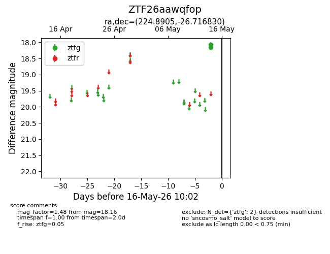
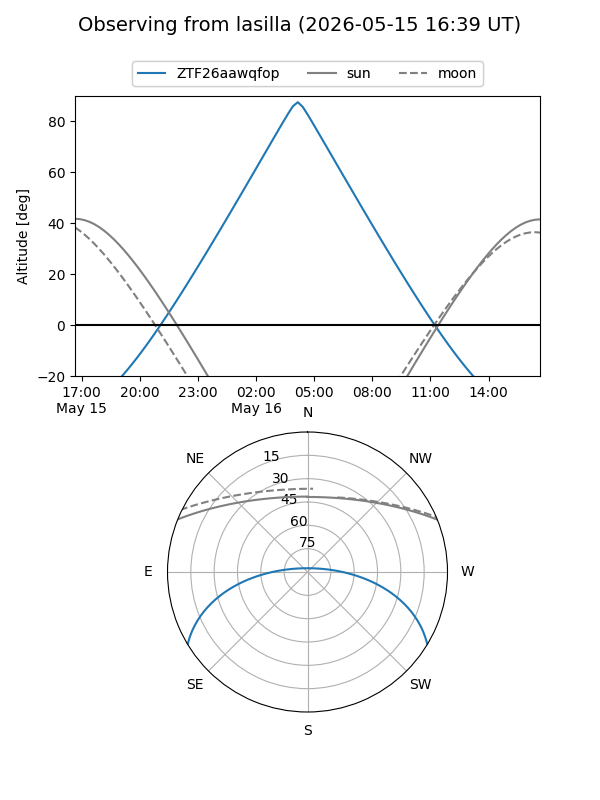
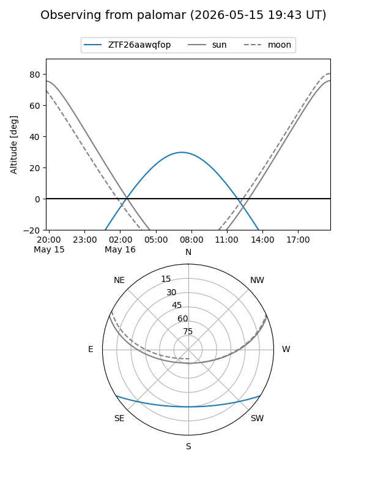

ZTF26aawqfop
Target ZTF26aawqfop at 2026-05-16 10:04
Aliases and brokers:
FINK: link
Lasair: link
ALeRCE: link
alt names
ZTF26aawqfop (ztf,fink_ztf)
Coordinates:
equatorial (ra, dec) = 224.8905,-26.71683
equatorial (HMS+DMS) = 14:59:33.71,-26:43:00.59
galactic (l, b) = (335.3702,+27.96584)
Flags:
Photometry:
last ztfg=18.16
2 ztfg detections
Lightcurve

Visibility


Additional plots